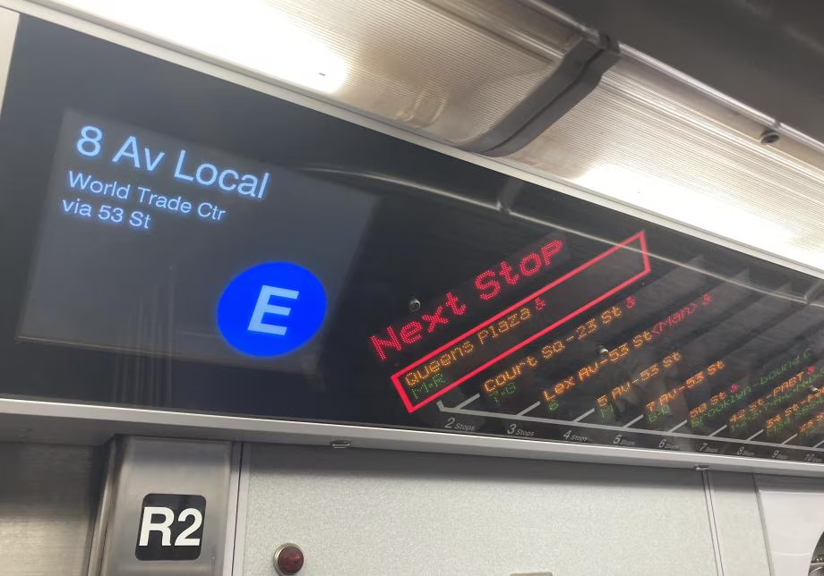

Things I did in May 2024
Diffusion models, Skew, and NYC.
May was less building, more experimenting, and even more reading and writing.
The Skew Programming Language
Skew doesn't have a logo, so I made this in Figma.
In early May, the company blog about one of the most interesting projects I worked on at Figma - the quest to migrate away from our custom programming language - was published.
I originally wrote some thoughts about Skew here, but it was getting long, so I split it into its own blog post: The Skew Programming Language.
Diffusion Models
Left: Dataset of 2D points in the shape of a T-Rex. Right: 1000 samples from a diffusion model trained on the dataset.
I also published a long explanation blog post about diffusion models, covering background, theory, advances, and applications. It got some attention on Hacker News, and I learned that the HN moderators will actually re-up posts that they decide have good content if they don't make it to the front page the first time around.
I wrote this because I was really dissatisfied with how the fast.ai “Build Stable Diffusion from Scratch” course explained the theory behind diffusion models.
To its credit, it's a practical course rather than a theoretical one, but I found it frustrating that we were frequently implementing formulas with only a vague explanation of what they were doing rather than a solid understanding of why the formulas looked the way they did and what each piece meant. I also wasn't satisfied with the "intuitive" explanation of diffusion that Jeremy gave, which went something like:
- Imagine we have a neural network that gives us the probability that a set of pixels is a coherent image.
- If we start with random noise pixels, then add the gradient of the probability of being an image (e.g. push it more towards being an image), we'll end up with a random coherent image.
Sampling from a distribution by following the score. Via Calvin Luo's blog.
I now recognize this as an explanation of denoising score matching, but I also think it leaves out a lot of context, and left me with a lot of questions at the time, like:
-
Why is this better than other approaches people have tried for generating images in the past, like GANs?
Answer: GANs have mode collapse and are hard to train. Flow-based models don't have mode collapse, but aren't as expressive and are difficult to scale up. -
How does this lead to the training objective of predicting noise added to an image?
Answer: Long derivation in the post! -
If we're following a gradient, why do we need to use this arbitrary-looking formula for sampling rather than a pre-existing gradient-based optimizer like Adam?
Answer: We're not only following a gradient. If we do that, then we end up with a form of mode collapse during sampling.
Answers to the above are in footnotes.
Figuring out the answers to the above questions were rough. There are many resources online explaining diffusion models, but I found them either:
- Too practical, like fast.ai, focused on architectures and implementations of formulas, with little time spent discussing why the formulas are the way they are, or
- Too theoretical, like the original papers, or blog posts and videos made by researchers for other researchers, assuming considerable background in statistical modeling techniques like variational inference.
I ended up writing a resource for myself which filled in all the context that I needed as a software engineer who likes understanding the why and how of new technology at an intuitive level (connecting things to my existing knowledge graph), but with only an undergraduate background in math and stats from years ago. There are lots of folks out there like me, and I was happy to see that many people found the post with the visual aids and example modeling task helpful.
One personal thing I realized when writing the post was that I have forgotten an embarrassing amount of basic math, particularly algebra. For example, I had to stop and think for a second whether \(\sqrt{\frac{a}{b}}=\frac{\sqrt{a}}{\sqrt{b}}\). This really slowed down my understanding of proofs; it was a lot easier in undergrad when I routinely exercised these skills. Memorization and repetition really is huge when it comes to learning.
Other
I started organizing an informal ML paper reading group for South Park Commons. It's nice to be forced to read papers and catch up on hot topics. For instance, coding agents are all the rage these days, so we recently read SWE-Agent.
I also started participating in the run club at SPC. I got injured after my last race and so was out of commission for a while, but am getting back into running. I like running because you don't need any special equipment or facilities for it - just your own two feet and a safe path to run on! It's something everyone can do, too. My dad runs marathons, one day I'll run one too.
Visiting NYC
I traveled to New York for the first time in a while to visit friends and family. I hung out a lot at South Park Commons NYC, went up the Empire State Building for the first time, and ate a bunch of pizza. Some observations:
- There are a LOT more people than San Francisco. A random corner of 28th and Park in Manhattan had way more foot traffic than almost everywhere I've been to in SF! It's possible this is more of a reflection of how low-density SF (and other American cities) are compared to NYC. Someone I know who grew up in a Chinese city once told me that NYC is the only place in all of the states that feels like home to them.
- Everyone knows NYC public transit (particularly the subway) is the best in the states. But it's interesting because the MTA is clearly an aging system - in fact, probably the oldest, most grungy system I've ever been on, even in the US - it feels like it's falling apart, yet keeps muddling on, carrying millions of people every day, held together by a patchwork of upgrades and spot checks.
Some clear signs of age I noticed:
- The trains I rode did not announce their next stop. In fact I'm pretty sure most didn't have a PA system at all.
- Many stations also did not have clear signage. Since it was my first time in the city and I didn't have the look of stations memorized, I mostly got around by counting the number of stops that Google Maps told me I had to take. Apparently some newer trains have digital maps (image), but the only time I saw one was when I took the train to my departing flight at JFK.
- 
- Many stations required separate entry for different directions. Moreover you had to pay each time you entered. There were a couple times where I accidentally entered the station with the uptown line, but I realized I had to go downtown, and ended up double-paying.
Some modernizations and advantages over other systems:
- The fare was totally digital, and you could pay via Apply Pay. No need to download a separate app or buy a special metro card!
-
The frequency is incredible for an American system.
- BART and Muni trains that go underground are almost always faster than every other option, but when you add in the 10-minute-plus average wait times, the train often ends up slower than walking or taking the bus if it's just going between spots downtown. If I enter the station while a train is coming and I miss it, I'll usually just get out and start walking.
- This never happens in Manhattan - there is almost no penalty to missing a train (it also helps that the stations are usually shallow, maybe because the system was dug while the city was young, before the underground had a chance to fill with pipes and other infrastructure).
- It's funny how much I'm emphasizing this because it's something that's table stakes for a functioning subway system in most countries - I missed it a lot when coming back from living in Taiwan for a month.